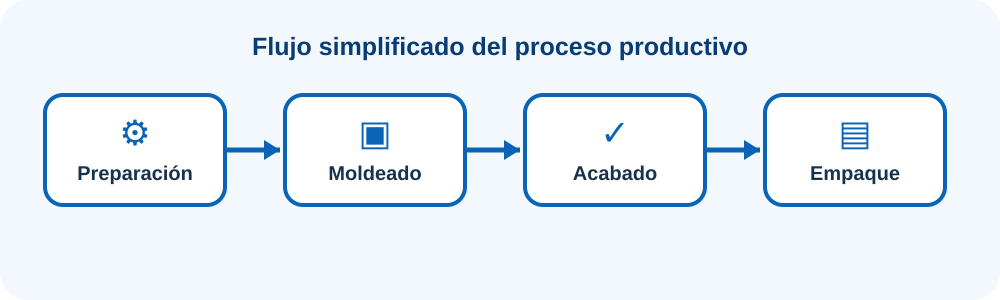

Una experiencia más visual para aprender simulación
Recorre los conceptos, observa cómo se representa un proceso, experimenta con capacidad y variabilidad y termina argumentando una decisión de Ingeniería Industrial.
Sistema, componentes y modelo.
Flujos y recursos productivos.
Cambiar condiciones y escenarios.
Capacidad, restricciones y resultados.
Convertir resultados en recomendaciones.
Conceptos de Modelamiento y Simulación
Pregunta guía
¿Cómo representar un sistema real de manera suficientemente útil para experimentar sin intervenir directamente la operación?
1. Del sistema real al modelo
Un sistema reúne elementos que interactúan para un propósito. Para estudiarlo se delimita una frontera y se identifican entradas, procesos, salidas y relaciones.
Piezas, clientes, pedidos.
Máquinas, operarios, vehículos.
Tipo, prioridad, lote.
Llegada, salida, falla.
Ejemplo industrial
En un centro de distribución, los pedidos son entidades, los operarios y montacargas son recursos, la prioridad es un atributo y la llegada de un pedido es un evento.
2. Modelo
Es una representación simplificada construida para responder una pregunta. Puede ser conceptual, matemático, físico o computacional. El nivel de detalle depende del objetivo.
3. Simulación
Consiste en experimentar con el modelo para observar su comportamiento bajo diferentes condiciones. Permite formular preguntas “¿qué pasaría si...?” antes de modificar el sistema real.
Cambia cuando ocurren eventos.
Las variables evolucionan continuamente.
Mismas entradas, mismos resultados.
Incorpora variabilidad aleatoria.
4. Ruta de un estudio
¿Qué decisión se necesita?
¿Qué debe responder?
¿Qué información se requiere?
¿Cómo funciona el sistema?
¿Se construyó correctamente?
¿Representa el sistema?
¿Qué escenarios comparar?
¿Qué recomienda la evidencia?
🏭 Línea de producción de envases

Jornada disponible: 480 minutos. Cambia los tiempos y la demanda para descubrir cómo se desplaza la restricción.
Generación de números aleatorios
Del proceso fijo al proceso variable
En la realidad, los tiempos de proceso, llegadas, fallas y demanda no siempre son constantes. La simulación estocástica permite representar esa variabilidad.
1. Pseudoaleatoriedad
Los computadores generan principalmente números pseudoaleatorios mediante algoritmos. Una secuencia útil busca propiedades como uniformidad, independencia, periodo suficientemente largo y reproducibilidad.
Base numérica entre 0 y 1.
Permite inicializar y reproducir.
Evalúan propiedades estadísticas.
2. Generador congruencial lineal
La semilla X₀ inicia la secuencia. Los parámetros a, c y m influyen en su comportamiento. En el aula se usa como recurso didáctico para entender el mecanismo.
3. De U a una variable industrial
Un valor U no es necesariamente el tiempo real. Puede transformarse. Para una uniforme entre a y b:
Ejemplo
Si el tiempo de empaque está entre 3 y 7 min y U=0.25, entonces X=3+4(0.25)=4 min.
🧪 Genera y transforma una secuencia
🏆 Reto de Ingeniería Industrial
Una empresa quiere aumentar su producción, pero no sabe si debe reducir tiempos, agregar recursos o aceptar parte de la demanda no atendida. Utiliza lo aprendido para formular un pequeño estudio.
Define sistema, frontera y objetivo.
Selecciona tres indicadores.
Propón dos escenarios.
Explica qué datos podrían ser variables.
Formula una recomendación basada en resultados.